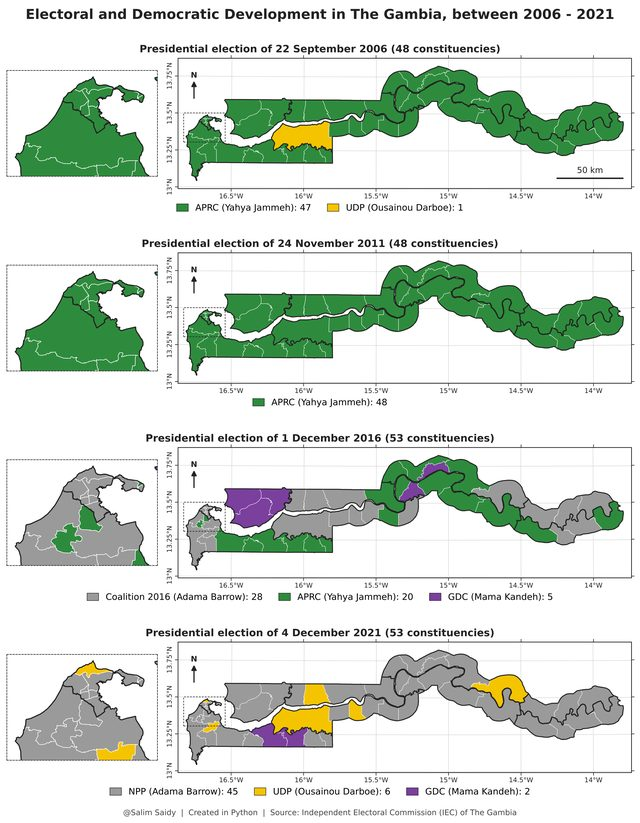
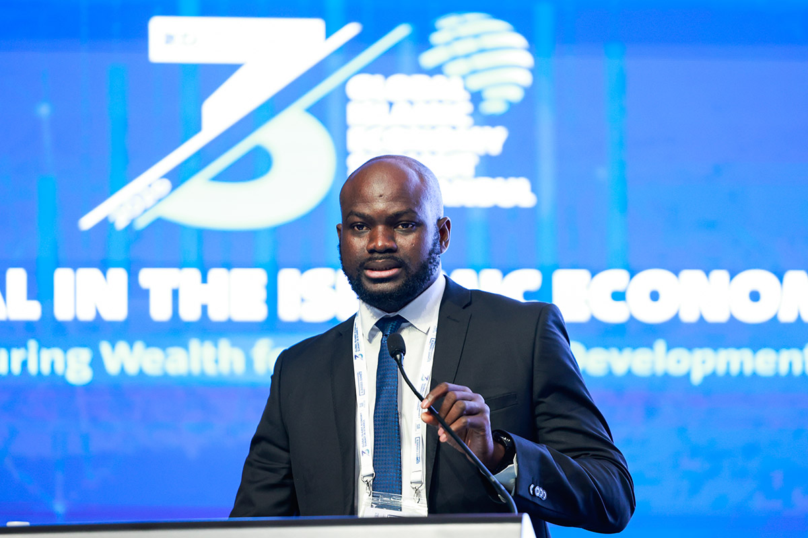

Posts

Who won your constituency?
Explore constituency-level maps and results for The Gambia’s presidential elections in 2006, 2011, 2016 and 2021.
Read original post →Joining the HUMAN-IT COST Action
I joined Working Group 3 to explore how AI and other disruptive technologies are reshaping work and labour markets.
Read original post →Islamic finance, FinTech and financial inclusion
Our study of 64 countries examines how Islamic finance development and FinTech innovation relate to financial inclusion.
Read original post →Institutional quality, FDI and growth in The Gambia
Our paper examines how foreign direct investment and institutional quality relate to economic growth in The Gambia.
Read original post →Best Participant Scholarship
I received the Best Participant Scholarship after presenting my research at the Global Islamic Economy Summit in Istanbul.
Read original post →
Islamic FinTech at the Global Islamic Economy Summit
I presented my research on Islamic FinTech and financial inclusion at the summit’s From Research to Impact session.
Read original post →Presenting at the AlBaraka Summit
A short thank-you to the Saleh Kamel Islamic Economics Award and the AlBaraka Forum for the opportunity to present my research.
Read original post →Three conferences in Türkiye
I shared ongoing research, including work on livelihood collapse in Somalia, during three conferences in May.
Read original post →What drives FinTech adoption in Sub-Saharan Africa?
Our Digital Finance paper combines econometric and machine learning models to study adoption across 36 countries.
Read original post →Foreign capital inflows and growth in The Gambia
Our paper applies a dual-gap approach to examine how foreign capital inflows relate to economic growth in The Gambia.
Read original post →Financial inclusion, borrowing and health financing
I announced a seminar on how access to finance shapes the way households in developing economies pay for healthcare.
Read original post →African storytelling in the digital era
I joined an Africa Business Forum and Expo panel on how journalists and storytellers use digital tools to reach wider audiences.
Read original post →The inaugural AlBaraka Summit
Reflections from the Istanbul summit on Islamic economics, ethical finance and sustainable development.
Read original post →Next by TRT World
Takeaways from the TRT World forum and its panel discussions on contemporary issues.
Read original post →Financial markets and portfolio management
I completed a course with honours and reflected on what I learned about financial markets and managing portfolios.
Read original post →New Generation Journalism Training
I shared my certificate from the online journalism training programme offered by Anadolu Agency and TİKA.
Read original post →Media ethics and governance
I completed the University of Amsterdam’s online course on media ethics and governance.
Read original post →